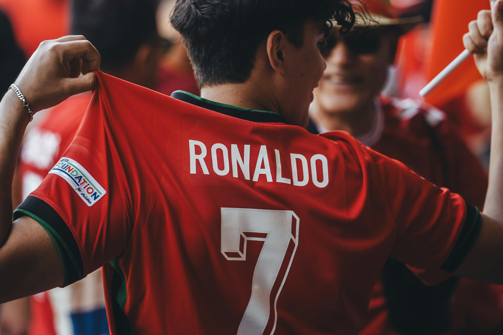

Cristiano Ronaldo
Quarterback • Arizona Cardinals #2
An experienced quarterback with a passion for the game, leading the Arizona Cardinals with precision and determination. Known for clutch performances and deep throws.


üèÜ Career History
 Al Nassr (2022 - Present)
Al Nassr (2022 - Present) Manchester United (2020 - 2022)
Manchester United (2020 - 2022) Juventus (2017 - 2020)
Juventus (2017 - 2020) Real Madrid (2009 - 2017)
Real Madrid (2009 - 2017) Juventus (2003 - 2009)
Juventus (2003 - 2009)
üìå Player Info
College: University of Lisbon
Position: LW / CF
Height / Weight: 2.18m / 84kg
Birthplace: Lisbon, Portugal
Status: Active